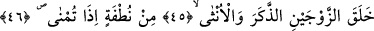
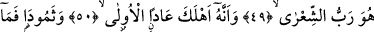
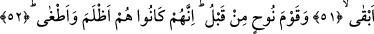
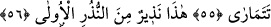
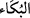

GÜLDÜREN DE
AĞLATAN DA O’DUR
43. Doğrusu güldüren de ağlatan da O’dur.
44. Öldüren de dirilten de O’dur.
45. Şurası muhakkak ki erkek ve dişiden ibaret olan iki çifti O yarattı.
46. (Rahime) atıldığında nutfeden,
47. Şüphesiz tekrar diriltmek de O’na âiddir.
48. Zengin eden de yoksul kılan da O’dur.
49. Doğrusu Şi’râ yıldızının Rabbi de O’dur.
50. Ve şüphesiz ki önceki Âd kavmini O helâk etti.
51. Semûd’u da (O helâk etti) ve geriye hiçbir şey bırakmadı.
52. Daha önce de çok zâlim ve pek azgın olan Nuh kavmini (helâk etmişti).
53. Altüst olan şehirleri de o böyle yaptı.
54. Onların başına getireceğini getirdi!
55. Şimdi Rabbinin nimetlerinin hangisinde şüpheye düşersin.
56. İşte bu ilk uyarıcılardan bir uyarıcıdır.
Allah Teâlâ’nın bizzat kendisi “Güldüren ve ağlatandır.” “Gülmek”, nefsin
sürûrundan dolayı yüz hatlarının gerilmesi ve dişlerin ortaya çıkmasıdır. Gülme
esnasında dişlerin ortaya çıkmasından dolayı ağzın içindeki ön dişler “davâhik”; yâni
gülünce beliren dişler adıyla tesmiye olunmuştur.
Bükâ ağlamak kelimesi elif-i memdûde ile okunan “hüzün ve feryaddan dolayı gözyaşı
akmak” mânâsında bir kelimedir. Şâyet ağlamadaki sesin tonu deve böğürtüsü gibi
yüksek çıkarsa bu fiil hemze-i memdûde ile (
) yazılır. Bu durumların hâricindeki bir
ağlama türü olursa yâni hüznün ağlamanın tonundan daha yüksek çıkarsa da bu sefer fiil